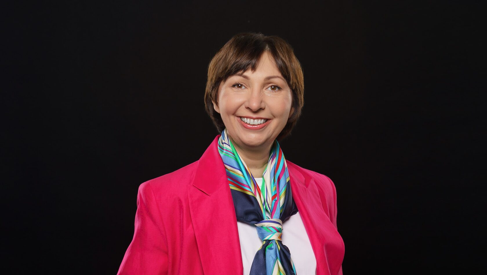
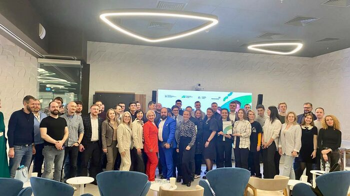

Менторинг-группа
Три месяца, небольшая группа, еженедельный ритм и работа с задачей своего дела.
Узнать о форматеМенторинг и программы
Лекции, наставничество и образовательные программы для предпринимателей, команд и молодых проектов.
Форматы
Три месяца, небольшая группа, еженедельный ритм и работа с задачей своего дела.
Узнать о форматеИнвестиции, предпринимательство, импакт-подходы и социальная инженерия — направления, обозначенные в презентации ассоциации.
Обсудить совместную программуМетодология, организация образовательной части и преподавание в программах для инновационных проектов.
Преподавательский опытМенторинг-группа Аванты
Три месяца совместного движения с профессиональным ведением и конкретными шагами.
Для людей со своим делом, опытом и идеями, которым важны ясность вектора, проявленность, партнёрства и развитие бизнес-модели.
На старте участник определяет личные цели. В конце работа сопоставляется с тем, что он сам хотел получить.
Свериться со своим вектором → выбрать конкретный шаг → действовать → поделиться результатом → получить обратную связь → скорректировать следующий шаг.
Рабочая пара или тройка, группа и ведущие помогают удерживать ритм. Если движение остановилось, участники пересматривают шаг, маршрут и приоритеты.
Личный разговор с Еленой или Марией помогает прояснить задачу и понять, подходит ли формат.
Обсудить участие
Президент ассоциации
Предприниматель, инвестор и просветитель. Издатель «Энциклопедии для детей Аванта+».
Вице-президент ассоциации
Методолог программ, консультант и ментор. Генеральный директор «Молтен Консалтинг», преподаватель МФТИ.
В присланном описании указаны старт в ноябре 2026 года, 180 000 ₽ за весь период, возможность рассрочки и скидка 20% при полной оплате.
Актуальные дату начала, наличие мест, стоимость и условия оплаты нужно уточнить у организаторов.
Источник материалаОбразовательный опыт

Из архива образовательной программы, 2023 год.
В 2023 году руководители Аванты участвовали в организации образовательной части и преподавании в Академии инноваторов. Архив также содержит лекции и экспертное участие в Московской неделе дизайна.
В презентации подхода от 27 октября 2026 года Елена Голикова представлена как преподаватель МФТИ. Конкретные курсы и условия участия уточняются у организаторов.
Источник материалаДля самостоятельного изучения
Русский язык, энциклопедические серии и просветительские планы.
Книжная полкаПодход Аванты, модули проектной работы и ритм менторинга.
Читать материалыПолезности рядом
Обсудить участие